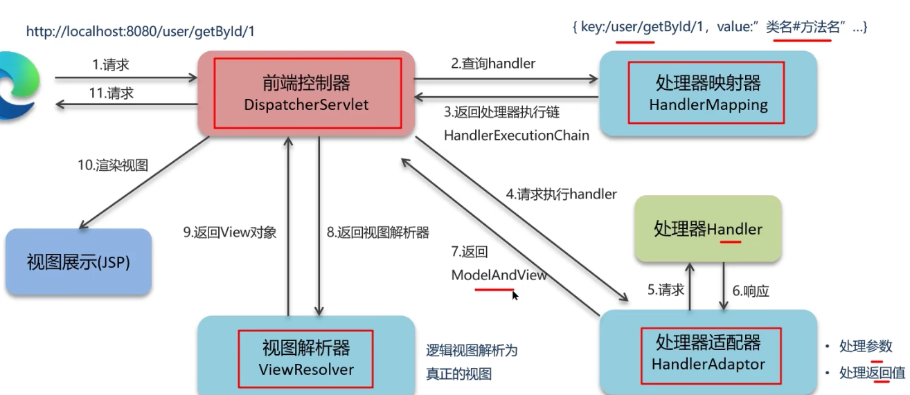
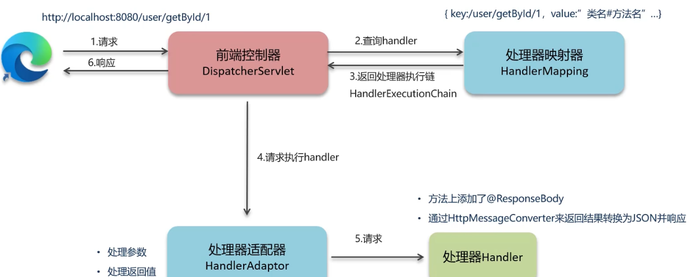

掌握SpringMVC的执行流程是当前这个框架最核心的内容，可以分为两个阶段来说，第一阶段是视图阶段，但由于现在基本是前后端分离， 都是通过JSON格式来请求与响应，所以会引出了第二阶段，前后端分离阶段
比如有一个请求需要到后台，一般是请求发送出去之后，后端有一个对应的前端控制器，这个前端控制器就相当于是一个调度中心， 所有的请求都需要经过它，当这个类加载之后，在内部会加载组件类，一共有三个：处理器映射器(HandlerMapper)，处理器适配器(HandlerAdaptor)， 视图解析器(ViewResolver)。
请求到前端控制器的时候，第一个会走处理器映射器，这里面保存的信息就是路径和handler信息，这个handler信息可以理解为当前某一个控制器中的某一个方法， 也就是说它可以找到路径中所对应的方法，也就是说他们有一个关系，这个关系存到一个Map中， key：/user/getById/1 value:"类名#方法名" 解析完后通过处理器执行链返回到前端控制器，处理执行链又是什么？ 比如有一个拦截器，那处理器映射器就会把这个拦截器和方法一起封装到这个执行链中，然后返回给前端控制器

目前都是返回的都是JSON，执行流程会简单许多，前面还是一样，前端控制器收到请求，先调用处理器映射器， 然后它返回处理器执行链，接着调用处理器适配器，处理器适配器请求处理器，这时候这个Handler他有可能在方法上加@ResponseBody， 这个注解会将当前方法的返回值通过HttpessageConverter转成json并响应
